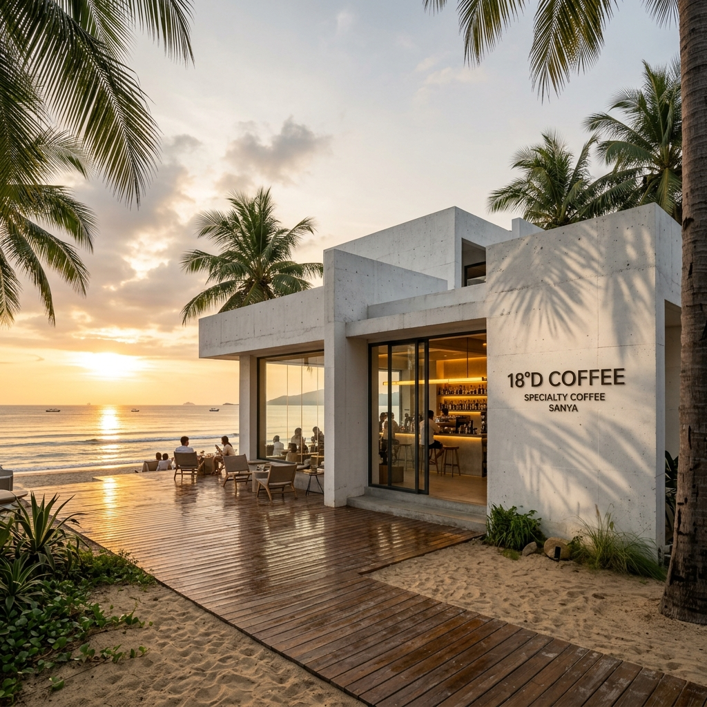
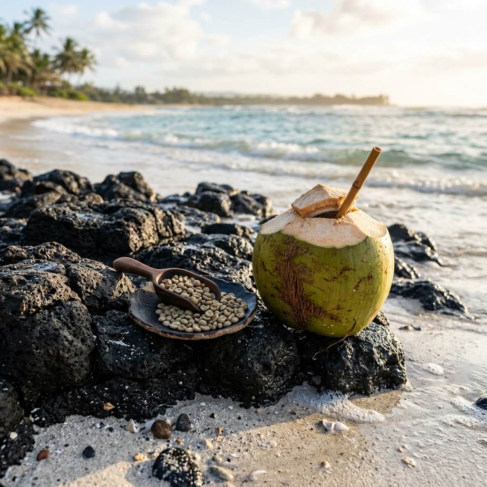

18.25° N, 109.51° E SANYA
黄金纬度 · 风味重塑
Specialty Coffee Laboratory
在北纬18°的温暖海风中，我们以对自然的敬畏，重塑海岛的味觉基因。让每一杯咖啡的温度，都连接起火山岩红土与椰林的耕作双手。

Specialty Coffee Laboratory
在北纬18°的温暖海风中，我们以对自然的敬畏，重塑海岛的味觉基因。让每一杯咖啡的温度，都连接起火山岩红土与椰林的耕作双手。
“地理的科学只能定义生长的边界，而唯有手心的温度，才能重塑风味的灵魂。”
海南三亚，位于北纬 18.25°N。这里拥有富含矿物质的火山岩红土土壤、充沛的阳光和湿润的太平洋海风，提供了咖啡豆生长所需的一切苛刻条件。18°D 咖啡 (18°Degree Coffee) 致力于探究这道地理线条背后的风味奥秘，并向世代耕作的当地咖啡农人致以最诚挚的谢意。
我们坚持“科学金杯萃取”与“人情侍奉”的融合。恒温 92°C 水流、1:15 的科学粉水比与慢速慢热的耐心萃取，只为提取出火山土壤特有的可可坚果后味。这不仅是一杯咖啡，更是一场关于自然风物与人文温度的感官共鸣。

放置在海岸玄武岩上的18°D可循环砂岩杯，杯体由海滩清理中回收的贝壳细砂与天然树脂复合制成。
“我们不单是在制作一杯流体，更是在拼凑一首关于泥土、海浪、手心温度的叙事诗。”
18°D 咖啡的起点，源自一次看似偶然的野外地质勘测。2024年秋，几位咖啡主理人与澄迈火山地质专家同行，站在富含矿物质的玄武岩红土上，手里握着当地咖啡农捧出的一把生豆。地质学者的一句话点醒了我们：这片土地沉淀了数万年的火山微量元素，海棠湾潮汐海风又源源不断地送来盐分与水分，这就是大自然的风味配方。
回到三亚后，我们创立了 18°D（18°Degree）。我们建立了一套属于海岸的“提取纪实”：只选用火山岩红土地带的单一源（Single Origin）咖啡，并与文昌东郊椰林签署有机椰乳直供协议。为了能让自然与邻里在这里和谐共处，我们不仅设计了无障碍的清水日落坡道，还引入了“无声咖啡师”点单系统。这是咖啡与社会的温情碰撞，更是我们对三亚这片山海的敬畏礼赞。
我们不远百里，在海南寻觅那些得天独厚的本土原材。正是因为对风土地理的敬畏，才让 18°D 拥有无可比拟的海岛滋味。

生长在海南澄迈富含铁、镁等矿物质的火山玄武岩红土土壤中。火山岩的高排水性使咖啡树根系更深，充分汲取矿物养分。中深度烘焙，前段散发出浓郁的坚果黑巧香气，尾段呈现极其圆润饱满的红糖甘甜，极低果酸，非常温和。
文昌东郊椰林毗邻太平洋海岸线，海风吹拂下的砂质土壤赋予了青椰极其纯净且高微量元素的椰水。每一颗椰子都是每日清晨由当地椰农手工采摘、运送至门店。椰水清甜解暑，物理冷榨出乳，保留了极其纯粹的乳脂香气，是特调最佳伴侣。
我们相信，咖啡馆不只是售卖饮品的空间，更是连接人与人、人与自然的温情纽带。在 18°D，每一杯咖啡都承载着善意的温度。
在烈日炎炎的三亚，我们常年为环卫工人、外卖骑手及避暑的清洁义工提供免费的冰镇椰水与防暑凉茶。您也可以在进店消费时参与“待用咖啡”计划，将善意传递给下一个需要清凉的陌生人。
我们非常欢迎您的毛孩子同行。门店内外设有专门的宠物憩息区，并免费提供新鲜过滤水与脱水烘干的自制有机椰肉犬用零食，让您与爱宠共同舒适地享受南海海风的吹拂。
让落日的美景平等地属于每一个人。18°D 门店全面覆盖无障碍清水坡道，配备宽敞的可活动桌椅，并提供听力与视觉助览引导服务，确保老年人、轮椅使用者与母婴家庭都能安全、尊严地享受日落。
在 18°D，我们秉持以人为本、专注倾听的“敬畏侍奉”理念。咖啡不仅是风味的提炼，更是服务细节中眼神交互、理解与尊重的艺术。
我们的咖啡师不满足于只做机器的冰冷输出。当您点单时，我们会认真倾听您对酸甜、苦感及浓度的细腻偏好，为您动态调整萃取水温（92°C 或更柔滑的 88°C）、研磨细度与奶泡厚度，做出您心目中期待的味道。
为履行社区平等责任，我们的团队包含听障咖啡师。我们设计了直观的图形化手势点单单页、液晶手写板以及振动提示牌。尊重与善意流动在每一次静默却饱含热忱的眼神交汇与躬身致意中。
临海多变的气候不应破坏您的惬意。门店前台常备洁净海滩拖鞋（供沾满细沙的宾客免费替换）、速干沙滩毛巾、突发海风骤冷时的温热椰水，以及防雨伞与环保防晒霜，以主动服务的态度防患于未然。
每一位踏入空间的宾客，都会在10秒内得到咖啡师真诚的点头和微笑注视。我们推崇“体贴而不打扰，关注而不紧跟”的服务距离，在您远眺南海时提供充裕的宁静留白，在您需要时随时躬身效劳。
我们不用高不可攀的奢侈包装，而是将对自然的敬畏与对您的体贴，融入这四个温暖的小细节里。
我们在露台外静候海风。店内的轻柔 Lo-Fi 音乐节奏，会随着海浪的涨落声响自然起落。退潮时音量柔和安静，涨潮时旋律轻快。不需要繁杂的科学设备，只为让您喝咖啡时，耳边能与南海的呼吸同频。
我们用澄迈火山区纯净的玄武岩粗砂，来净化泡制咖啡的过滤水。火山砂岩自带丰富的矿物质，能天然软化水质，让冲出来的每一杯咖啡更加顺滑、不苦涩，带有一丝大自然的微甜。普通的水，因为这一道纯净慢滤，也有了火山的温度。
为了让您和我们的听障咖啡师沟通更方便、更暖心，我们做了一批代表风味偏好的小木牌（如“火山”、“海浪”、“微甜”）。您只需指一指或递给咖啡师对应的小木牌，就能轻松完成定制。一个简单的手势与微笑，就是我们之间最美的默契。
我们在海滩漫步时，会把海滩上的碎贝壳和粗沙收集起来，与竹纤维融合制成可以重复使用的‘沙滩粗砂杯’。杯子拿在手里有沙滩的粗粝质感。它百分之百来自自然，即使旧了丢弃，也能在海水里自然融为沙子。您可以带它去沙滩走走，让环保变成随手的习惯。
我们在三亚海棠湾海岸边，用粗粝玄武石与白色清水混凝土筑成了一座半开放露台，正对南海一望无际的晚霞与落日。
三亚今日落日预计发生于 19:12，目前根据气象湿度测算，晚霞概率为 88%。
我们不提供纸质小票。预约成功后，系统将为您生成环保电子品鉴单，凭电子二维码入场消费，可积攒低碳积分。
我们一直在寻找对风土地理心存敬畏、对邻里社区满怀温情的伙伴。这不仅是一份工作，更是一场关于风味与人情的美好旅程。
负责科学金杯手冲与特调咖啡的萃取，深入倾听宾客偏好并提供风味定制，以温暖、适度的服务礼仪接待店内的每一位邻里。
面向听障、语障等特殊群体开放。进行咖啡日常冲煮及出杯，通过眼神、手势及文字与宾客无声传递温暖。
统筹门店的整体运营，监督落实以人为本的服务标准，管理气象应急备品，策划社区公益与宠物友好活动。
发送简历至 talent@18dcoffee.com。邮件中可附上一段关于您个人冲煮日常或风味自述的短视频，让我们更立体地认识您。
每周二下午 14:00 - 17:00，您可以直接携带您的常用咖啡杯来到三亚海棠湾门店。我们会请您喝一杯火山豆手冲，在海风中面对面边喝边聊。
如果你有同频的朋友热爱咖啡与人情，欢迎推荐。推荐成功入职并满三个月，推荐人与被推荐人都将获得 18°D 「海风产地溯源探索之旅」积分大礼包。
从海岸日落到火山地质公园，从咖啡香气到创意中餐美学，我们致力于将地缘风土地貌与温暖人情融入每一次旅人餐桌体验中。
东方风物创意中餐。我们以海南山海本土原材为底色，将文昌鸡、万宁东山羊等本土食材与粤闽琼等中餐流派完美融合，运用现代盘艺与精准火候解构重塑。我们秉承“一盘一物皆有度，一筷一味尽是温”的侍奉态度，向土地致敬。
创意中式粉面美学。将海南粉、陵水酸粉等中式传统粉面以文昌鸡高汤与慢熬火山豆萃取融合重塑。致力于在极简现代空间中，为匆忙旅人提供一碗热气腾腾、饱含温度与人文关怀的创意中式面食服务。